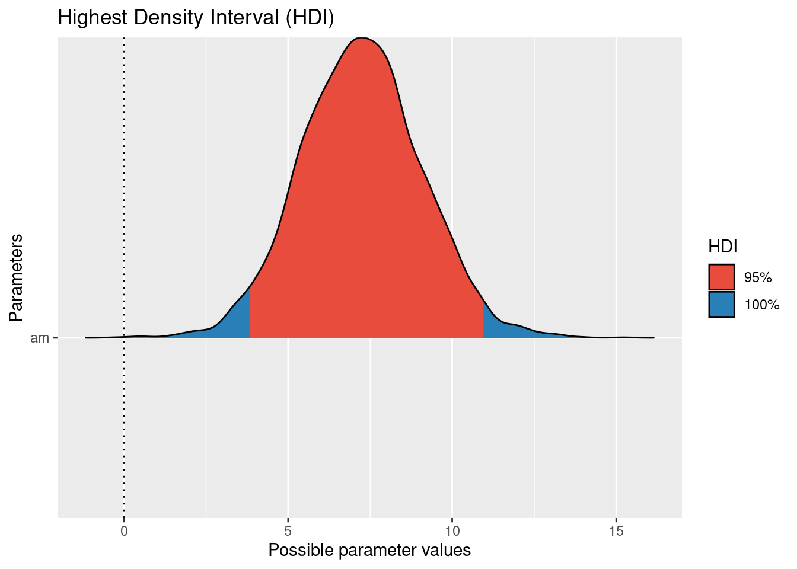

library(tidyverse)
library(easystats)
library(rstanarm)
library(gt) # optional
library(gtsummary) # optional13 Auswerten: Berichten von Statistiken
13.1 Lernsteuerung
13.1.1 Lernziele
- Sie können Ihre Forschungfrage mit Methoden der Inferenzstatistik nach Bayes auswerten.
13.1.2 Position im Lernpfad
Sie befinden sich im Abschnitt “Auswertung” in Abbildung 1.2. Behalten Sie Ihren Fortschritt im Projektplan im Blick, s. Abbildung 1.3.
13.1.3 tl;dr
In diesem Kapitel wird folgende Frage beantwortet: “Wie man die Ergebnisse einer Bayes-Analyse berichtet”
13.1.4 Benötigte R-Pakete
13.2 Warum das Berichten (Ihrer Analyse) wichtig ist
Statistische Analysen können komplex und schwierig zu verstehen sein.1 Die Versuchung ist daher immer gegeben, beim Berichten einer Analyse wichtige Aspekte unerwähnt oder unerklärt zu lassen. Lässt man aber wichtige Informationen aus, steigt die Gefahr, dass die Analyse nicht nachvollziehbar ist. Am schönsten ist dieses Problem im Cartoon mit den zwei Wissenschaftlern von einer Tafel (von Sidney Harris) dargestellt.
Wichtig
Stellen Sie sicher, dass Ihre Analyse nachvollziehbar ist. Andere Personen sollten Ihre Analyse auch ausführen können. Daher ist es wichtig, dass Sie Ihre Analyse zu Ihrer Studie einreichen (außerdem auch die Daten und Ihr Data-Dictionary).\(\square\)
13.3 Prinzipien der Berichtlegung (von Bayes-Statistik)
Im Folgenden sind einige Grundlagen des Berichtens von Statistiken dargestellt. Zwar wird in einigen Teilen auf die Bayes-Methode abgestellt, aber viele Teile gelten für alle statistischen Analysen. Dabei sei hinzugefügt, dass Statistik, so nüchtern sie den geneigten Studenis auch erscheinen mag, durchaus Eitel- und Partikularitäten aufweist: Nicht jeder Autor oder Dozent oder jede Richtlinie gibt die gleichen Anweisungen oder Empfehlungen! Die folgenden Hinweise entsprechen der (aktuellen, sich durchaus im Lauf der Zeit ändernden) Sicht dieses Dozenten.
Das erste Prinzip des Berichtlegens lautet “so viel wie nötig, aber so wenig wie möglich”. Man will die Lesis nicht überfrachten, aber alle nötigen Informationen übermitteln. Das zweite Prinzip lautet, dass man die Informationen am rechten Ort vermittelt. So wird ei Lesi die Erklärung der Zusammensetzung der Stichprobe nicht im Diskussionsteil vermuten und sich zu Recht wundern, im Methodenteil nichts zur Stichprobe zu finden. Das dritte Prinzip lautet, dass man priorisiert. Wichtiges in den Hauptteil, Details in den Anhang (bzw. in ergänzende Datein, “supplementary files”). Detaillreiche Statistiken berichtet man eher in Tabellen; geht es um einen Überblick, bietet sich häufig ein Diagramm an. Berichtet man im Text, so schreibt man auf “gut Deutsch” die Aussage in den Satz, und die Zahlen eher in Klammern dahinter. Das vierte Prinzip lautet, konsistent zu sein. Es gibt viele Wege nach Rom, bzw. viele Ansätze, nützlich und effektiv - mithin “richtig” - zu berichten. Wichtiger als die Wahl einer bestimmten Art und Weise, ist es, konsistent zu sein, ähnlich wie beim Zitieren. Das fünfte Prinzip, könnte man sagen, ist so selbstverständlich, dass es keiner Erwähnung bedarfe, aber die Realität lehrt uns leider mitunter das Gegenteil. Es lautet Lauterkeit oder Rechtschaffenheit. Kennzahlen bewusst falsch zu berichten rangiert irgendwo zwischen Straftat und beruflichem Fehlverhalten, je nach Kontext und kann harte Bestrafung verdienen. Gängiger sicherlich sind subtilere Arten, dieses Prinzip zu verletzen. Dazu ist als erstes das selektive Berichten zu nennen: Unliebsame Befunde werden verschwiegen, hypothesenkonforme hingegen nach vorne gestellt. Das ist zwar dann nicht gelogen aber die Irreführung wird bewusst in Kauf genommen.
Die gute Nachricht für alle Studentis: Es gibt für Sie keinen Anreiz, die Ergebnisse “aufzuhübschen” (im Gegensatz zu Berufswissenschaftlis). Ihre Note wird nicht daran gemessen, ob Sie einen neuen Expoplaneten entdecken, oder sonstige “starke” Ergebnisse aufweisen können. Nein! Unklare, nicht-bestätigende oder unerwartete Ergebnisse sind genauso gut - auch wissenschaftlich übrigens haben sie die gleiche Daseinsberechtigung, wie die Ergebnisse, die im “Journal of Flashy Results” für Presseberichte sorgen. Für ihre Note ist es unerheblich, wie “signifikant”, “effektstark”, “präzise” oder “hypothesenkonform” ihre Ergebnisse sind.
Es ist hilfreich, im Sinne des vierten Prinzips (Konsistenz) sich nach einer bekannten, vielleicht sogar verbreiteten Nomenklatur bzw. Vorgehensweise zu richten. Für Bayes-Analysen gibt es dazu Richtlinien und Checklisten; die folgenden Hinweise orientieren sich an Kruschke (2021), genannt BARG (Bayesian Analysis Reporting Guidelines); der Volltext ist hier zugänglich. Auch die APA (American Psychological Assocation) hat eine Checkliste herausgegeben, wie Bayes-Statistik berichtet werden sollte.
Die wichtigsten Ergebnisse der BARG sind in dieser Tabelle ausgelegt. Im folgenden wird eine Auswahl der BARG vorgestellt. Das Ziel ist nicht eine umfassende Darstellung mit einer hohen Tiefe der Exposition. Vielmehr soll - angepasst an den Kenntnissstand von Bachelor-Studentis - ein angemessener Überblick ausgewählt werden. Ambitionierte Studentis sind aufgefordert, breite und tiefer als in der folgenden Ausführtung erläutert, zu berichten. Die folgende Ausführung orientiert sich an der Standardgliederung wissenschaftlicher Berichte.
Lesis seien verwiesen auf das Buch von Jhangiani, Chiang, und Cuttler (2019), die einen hervorragenden Überblick über die Materie vermitteln.
13.4 Allgemeine Richtlinien zum Berichten von Statistik
Die APA hat eine Checkliste bzw. Richtlinie herausgegeben zum Berichten von Statistik (vgl. Cooper 2020). Die lesenswerten Schwesterbüch von Jan Hendrik Peters und Dörfler (2019) bzw. Jan H. Peters und Dörfler (2015) geben nicht nur Formulierungshilfen, sondern erläutern, wie man eine sinnvolle Gliederung erstellt und welche Inhalte in welchem Abschnitt gehören.
Grundlegende Prinzipien des Berichtens von Statistiken sind:
- Begründet: Eine Erläuterung, warum ein Vorgehen gewählt wurde, wird gegeben.
- Nachvollziehbar: Lesis können anhand des Berichts (potenziell) nachvollziehen, wie die Autoren zu einem Ergebnis gelangt sind.
- Von einfach zu komplex: Es ist verbreitet, zunächst grundlegende Ergebnisse, dann komplexere Modellanalysen zu präsentieren.
- Deskriptiv: Ergebnisse werden berichtet, aber nicht bewertet (das kommt erst im Diskussionsteil).
- Lauter: Alle relevanten Ergebnisse werden offengelegt.
Hinweis
In Kapitel 4 finden Sie Vorschläge zum Gliedern Ihres Berichts. \(\square\)
13.5 Statistiken berichten im Ergebnisteil
Hinweis
Einen Gliederungsvorschlag für Ihren Ergebnisteil finden Sie in Kapitel 4.3.7. Dort finden Sie z. B. auch Hinweise zur Gestaltung von Abbildungen, s. Kapitel 4.3.7.2. \(\square\)
13.5.1 Datenaufbereitung
Falls Sie die Daten aufbereiten mussten in einem Maße, dass übliche, notwendige Operationen übersteigt, sollten Sie kurz berichten, was Sie getan haben. Wenn Sie lediglich die Daten mit Operationen wie Scores berechnet oder Variablen zentriert aufbereitet haben, müssen Sie nichts weiter berichten. Sie sollten dabei keine Syntax (z. B. R-Code) aufführen; dafür ist ggf. Platz im Anhang.
13.5.2 Deskriptive Statistik
13.5.2.1 Was soll ich schreiben?
Bevor Sie die Ergebnisse Ihrer Modellierung zeigen, bietet sich etwas “Aufwärmen” an, vor dem Fußballspiel wärmt man sich ja auch erstmal auf. Dazu bieten sich die deskriptiven Statistiken zu Ihren Daten an.
Häufig wird man ein Maß der zentralen Tendenz (Mittelwert oder Median) sowie ein dazu passendes Streuungsmaß berichten (z. B. SD) berichten. Evtl. kann man ein Maß zur Präzision des Mittelwerts angeben (SE). Bei schiefen Verteilungen greift man meist auf robuste Kennwerte zurück; bei normalverteilten Verteilungen ist Mittelwert und SD die Statistik der Wahl. Die Stichprobengröße sollte klar sein; liegen fehlende Werte vor, so sollte pro Kennzahl jeweils die effektive Stichprobengröße berichtet sein. Ansonsten reicht es, die Stichprobengröße an einer Stelle (im Text) anzuführen.
Gängige statistische Symbole sollen nicht definiert werden, z. B. M, SD, F, t, df, N, n, OR. Andere statistischen Abkürzungen, die weniger gebräuchlich sind, sollten definiert bzw. auf die Definition verwiesen werden, z. B. pd, ROPE.
Formulierungsvorschlag
Der mittlere Achtsamkeits-Wert lag in der Stichprobe bei M = 12.23 (SD = 1.23).
Die Reaktionszeit in der Experimentalbedingung war höher als in der Kontrollbedingung (Experimentalbedingung: M = 2.7, SD = 0.3; Kontrollbedingung: M = 0.1, SD = 0.4).
Es fand sich eine starke Korrelation zwischen Achtsamkeit und Lebenszufriedenheit, r(134) = .42, 95% CI [.32, .52].
Hat man eine größere Zahl an Statistiken, so bietet es sich an, die Ergebnisse nicht im Fließtext, sondern in einer Tabelle zu berichten. Berichtet man Ergebnisse in einer Tabelle, so doppelt man sie nicht im Text.
Eine nützliche Ergänzung ist es, zusätzlich zu den univariaten Statistiken noch Zusammenhangskoeffizienten (Korrelationen) zu berichten.
13.5.2.2 Tabellen mit R
Im folgenden sind Möglichkeiten aufgezeigt, wie Sie Tabellen mit R für Ihren Bericht erstellen können. Bitte behalten Sie im Blick, dass in einem deutschsprachigen Bericht die Variablen- und Kennzahlennamen in deutscher Sprache erscheinen sollten. Auf “technisch” anmutenden Abkürzungen (z. B. mpg_sd) sollten man verzichten zugunsten “sprechenderer” Formulierengen (z. B. SD Spritverbrauch, oder SD MPG, wenn “MPG” in der Fußnote der Tabelle definiert ist). Tabellen sollten für sich selber verständlich sein, ohne Bezug zum Text.
Mit gängigen R-Methoden kann man sich deskriptive Statistiken ausgeben lassen, s. Tabelle 13.1.
mtcars %>%
summarise(mpg_avg = mean(mpg),
mpg_sd = sd(mpg),
cor_mpg_hp = cor(mpg, hp)) %>%
rename(`MW Spritverbrauch` = mpg_avg,
`SD Spritverbrauch`= mpg_sd,
`Korrelation Spritverbrauch mit PS-Zahl` = cor_mpg_hp)Alternativ zu selbsterstellten Tabellen kann “Statistik-Fast-Food” konsumieren und lässt sich einen Haufen Zahlen auf einmal ausgeben. R-Pakete wie r_statix, skimr oder easystats helfen dabei, s. als Beispiel Tabelle 13.2.
library(easystats)
describe_distribution(mtcars) %>%
select(-n, -n_Missing) %>%
rename(MW = Mean, Schiefe = Skewness)| Variable | MW | SD | IQR | Range | Schiefe | Kurtosis |
|---|---|---|---|---|---|---|
| mpg | 20.09 | 6.03 | 7.53 | (10.40, 33.90) | 0.67 | -0.02 |
| cyl | 6.19 | 1.79 | 4.00 | (4.00, 8.00) | -0.19 | -1.76 |
| disp | 230.72 | 123.94 | 221.53 | (71.10, 472.00) | 0.42 | -1.07 |
| hp | 146.69 | 68.56 | 84.50 | (52.00, 335.00) | 0.80 | 0.28 |
| drat | 3.60 | 0.53 | 0.84 | (2.76, 4.93) | 0.29 | -0.45 |
| wt | 3.22 | 0.98 | 1.19 | (1.51, 5.42) | 0.47 | 0.42 |
| qsec | 17.85 | 1.79 | 2.02 | (14.50, 22.90) | 0.41 | 0.86 |
| vs | 0.44 | 0.50 | 1.00 | (0.00, 1.00) | 0.26 | -2.06 |
| am | 0.41 | 0.50 | 1.00 | (0.00, 1.00) | 0.40 | -1.97 |
| gear | 3.69 | 0.74 | 1.00 | (3.00, 5.00) | 0.58 | -0.90 |
| carb | 2.81 | 1.62 | 2.00 | (1.00, 8.00) | 1.16 | 2.02 |
Tabellen mit flextable(), gtsummary oder gt() kann man sich eine schicke Tabelle (im HTML-Format) ausgeben lassen, die man dann per Copy-Paste in Word, d.h. den eigene Forschungsbericht, übernehmen kann. s. Tabelle 13.3.
library(gt) # gt wie "grammer of tables"
meine_tab <-
describe_distribution(mtcars) %>%
gt() %>% # erzeugt schicke Tabelle
fmt_number(where(is.numeric), decimals = 2) # Anzahl der Dezimalstellen
meine_tab| Variable | Mean | SD | IQR | Min | Max | Skewness | Kurtosis | n | n_Missing |
|---|---|---|---|---|---|---|---|---|---|
| mpg | 20.09 | 6.03 | 7.53 | 10.40 | 33.90 | 0.67 | −0.02 | 32.00 | 0.00 |
| cyl | 6.19 | 1.79 | 4.00 | 4.00 | 8.00 | −0.19 | −1.76 | 32.00 | 0.00 |
| disp | 230.72 | 123.94 | 221.53 | 71.10 | 472.00 | 0.42 | −1.07 | 32.00 | 0.00 |
| hp | 146.69 | 68.56 | 84.50 | 52.00 | 335.00 | 0.80 | 0.28 | 32.00 | 0.00 |
| drat | 3.60 | 0.53 | 0.84 | 2.76 | 4.93 | 0.29 | −0.45 | 32.00 | 0.00 |
| wt | 3.22 | 0.98 | 1.19 | 1.51 | 5.42 | 0.47 | 0.42 | 32.00 | 0.00 |
| qsec | 17.85 | 1.79 | 2.02 | 14.50 | 22.90 | 0.41 | 0.86 | 32.00 | 0.00 |
| vs | 0.44 | 0.50 | 1.00 | 0.00 | 1.00 | 0.26 | −2.06 | 32.00 | 0.00 |
| am | 0.41 | 0.50 | 1.00 | 0.00 | 1.00 | 0.40 | −1.97 | 32.00 | 0.00 |
| gear | 3.69 | 0.74 | 1.00 | 3.00 | 5.00 | 0.58 | −0.90 | 32.00 | 0.00 |
| carb | 2.81 | 1.62 | 2.00 | 1.00 | 8.00 | 1.16 | 2.02 | 32.00 | 0.00 |
Aus APA-Sicht würde vermutlich MW und SD genüge tun (sofern man von normalverteilten Variablen) ausgeht. Allerdings schadet es auch nicht, zusätzliche Kennwerte anzugeben. Verzichten sollte man aber vermutlih - in diesem Fall - auf die Spalte n_Missing, da die Spalte keine Information birgt.
So sieht eine Tabelle mit gtsummary aus, s. Tabelle 13.4. Hier wird die Häufigkeitsanalyse gezeigt.
library(gtsummary)
mtcars %>%
select(mpg, cyl) %>%
tbl_summary()| Characteristic | N = 321 |
|---|---|
| mpg | 19.2 (15.4, 22.8) |
| cyl | |
| 4 | 11 (34%) |
| 6 | 7 (22%) |
| 8 | 14 (44%) |
| 1 Median (IQR); n (%) | |
Hier findet sich noch mehr zum Thema Exportieren von Tabellen aus R nach Word.
Eine tidy Korrelationstabelle kann man sich z. B. (mit easystats, aber es gibt mehrere R-Pakete für diesen Zweck) so ausgeben lassen:
meine_cor_tab <-
mtcars %>%
select(mpg, hp, disp) %>%
correlation()
meine_cor_tab %>% print_md()| Parameter1 | Parameter2 | r | 95% CI | t(30) | p |
|---|---|---|---|---|---|
| mpg | hp | -0.78 | (-0.89, -0.59) | -6.74 | < .001*** |
| mpg | disp | -0.85 | (-0.92, -0.71) | -8.75 | < .001*** |
| hp | disp | 0.79 | (0.61, 0.89) | 7.08 | < .001*** |
p-value adjustment method: Holm (1979) Observations: 32
Hinweis
Mit print_md erreicht man, dass die Tabelle in schönerem Markdown-Format gedruckt wird. Da Markdown sich problemlos in HTML- oder Word-Format konvertieren lässt, kann man auf diese Art schöner formatierte Tabellen erhalten (als mit dem Standard von describe_distribution and friends). gt ist allerdings schon von Natur aus schön.\(\square\)
Möchte man eine quadratische Korrelationstabelle (was der üblicheren Berichtsform entspricht) kann man das so bekommen:
summary(meine_cor_tab) %>%
gt() %>% # machen wir gleich eine schicke HTML-Tabelle
fmt_number(where(is.numeric), decimals = 2)| Parameter | disp | hp |
|---|---|---|
| mpg | −0.85 | −0.78 |
| hp | 0.79 | NA |
Vergessen Sie nicht, das Tabellen (genau wie Abbildungen) im Text zu referenzieren sind.
Hinweis
Weitere Hinweise zur Gestaltung von Tabellen finden Sie in Kapitel 4.3.7.1. \(\square\)
13.5.3 Inferenzstatistik
Es empfiehlt sich, die Modellgleichung inkl. Prior-Spezifiaktion aufzuführen.
13.5.3.1 Posteriori-Verteilung
Für jede Hypothese müssen Sie die zentralen Ergebnisse berichten. Die Hypothesen beziehen sich auf Populationen, also benötigen wir Inferenzstatistik. In der frequentistischen Statistik finden hier Statistiken wie der p-Wert und das (frequentistische) Konfidenzintervall Verwendung. In einer Bayes-Analyse ist die Posteriori-Verteilung der Dreh- und Angelpunkt der Ergebnisse.
Zur Erinnerung: Die Post-Verteilung gibt an, wie wahrscheinlich ein bestimmter Parameterwert jetzt ist, nachdem die Daten bekannt sind.
Ein statistisches Modell wird zumeist mit einem Regressionsmodell umgesetzt. Ein Regressionsmodell kann man in R mit lm() (frequentistisch) oder z. B. stan_glm() (Bayes) berechnen. Die Syntax ist sehr ähnlich.
13.5.3.2 Umsetzung in R
Hinweis
Detailliertere Hinweise zur Modellierung finden Sie Kapitel 12. \(\square\)
Sie können eine Posteriori-Verteilung z. B. für ihr Modell berechnen:
library(rstanarm)
m1 <- stan_glm(mpg ~ am, data = mtcars, seed = 42)Hier sind die Ergebnisse; noch nicht ganz poliert für einen APA-Bericht, s. Tabelle 13.5.
parameters(m1, prob = .95) %>%
print_md()| Parameter | Median | 95% CI | pd | Rhat | ESS | Prior |
|---|---|---|---|---|---|---|
| (Intercept) | 17.14 | (14.85, 19.51) | 100% | 0.999 | 3739.00 | Normal (20.09 +- 15.07) |
| am | 7.21 | (3.72, 10.70) | 99.95% | 0.999 | 3755.00 | Normal (0.00 +- 30.20) |
Wir bekommen ein 95%-Perzentilintervall (PI, kein HDI, ist aber auch ok, allerdings ist das HDI einen Tick besser). Es erlaubt uns zu sagen, dass der Unterschied im Spritverbrauch zwischen 3.6 und 11 Meilen (pro Gallone Sprit) liegt, laut dem Modell. Der Schalter prob erlaubt, andere CI-Breiten, z. B. 97% zu wählen.
Formulierungsvorschlag:
Der statistische Effekt der Schaltung auf den Spritverbrauch wurde vom Modell auf 7.21 geschätzt, 95%-PI [3.72, 10.70]. Da die Null nicht im Intervall liegt, kann die Nullhypothese ausgeschlossen werden.
Ein HDI bekommen Sie, wenn Sie bei ci_method den Wert "hdi wählen; oder wenn Sie gleich den Befehl hdi(m1) ausführen, s. Tabelle 13.6.
parameters(m1, prob = .95, ci_method = "hdi") %>% print_md() # oder: hdi(m1)| Parameter | Median | 95% CI | pd | Rhat | ESS | Prior |
|---|---|---|---|---|---|---|
| (Intercept) | 17.14 | (14.95, 19.59) | 100% | 0.999 | 3739.00 | Normal (20.09 +- 15.07) |
| am | 7.21 | (3.67, 10.62) | 99.95% | 0.999 | 3755.00 | Normal (0.00 +- 30.20) |
Die Tabelle können Sie natürlich auch gleich wieder aufhübschen, für Ihren Bericht, s. Tabelle 13.7.
hdi(m1) %>%
select(Parameter, CI_low, CI_high) %>%
gt() %>%
fmt_number(where(is.numeric), decimals = 2)| Parameter | CI_low | CI_high |
|---|---|---|
| (Intercept) | 14.95 | 19.59 |
| am | 3.67 | 10.62 |
Ein ähnliches Ergebnis erzielt man mit dem Paket gtsummary, s. Tabelle 13.8.
tbl_regression(m1)| Characteristic | Beta | 95% CI1 |
|---|---|---|
| am | 7.2 | 3.7, 11 |
| 1 CI = Credible Interval | ||
Den Punktschätzer (Median) zum Unterschied für die Gruppen (Automatik vs. Schaltgetriebe) hat uns die Funktion parameters() auch geliefert. Der Unterschied zwischen den beiden Gruppen liegt laut Modell bei ca. 7.2 Meilen.
Es bietet sich an, die Parameter-Schätzbereiche zu visualisieren. Das kann man z. B. so machen:
parameters(m1) %>% plot(show_intercept = TRUE)
Der Schalter show_intercept regelt, ob der Schätzwert für den Achsenabschnitt gezeigt werden soll oder nicht.2
Möchte man verschiedenen Regressiongsgewichte vergleichen, bietet es an, diese vorab zu standardisieren mit der z-Transformation.
Mehr zur Analyse mit rstanarm findet sich z. B. hier oder bei Gelman, Hill, und Vehtari (2021).
Übrigens kann man ein hdi() auch plotten, wenn man möchte:
plot(hdi(m1))Sieht auch ganz schick aus; im Hintergrund wird {easystats} zum Plotten verwendet. Praktischerweise ist es ein ggplot-Diagramm, man kann also mit bekannten (ggplot-)Methoden nachpolieren, z.B s. Abbildung 13.1.
plot(hdi(m1)) +
labs(title ="Hier steht mein Titel",
y = "",
y = "",
x = "Parameterwert") +
theme_minimal() +
theme(axis.text.y = element_blank()) # keine Achsenlabels auf Y ("am" weg)
13.5.3.3 ROPE
Testen Sie eine Hypothese, die einen “praktischen Nullwert” ausschließen möchte, so bietet sich das ROPE-Verfahren an.
Mit ROPE testet man demnach keine “Exaktnullhypothese”, sondern eine “Praktischnullhypothese”, nämlich dass ein Effekt so klein ist, dass er praktisch keine Bedeutung hat.
Diesem Konzept liegt die Überlegung zugrunde, dass es in der freien Wildbahn kaum oder keine Effekte gibt, die exakt Null sind, also “0,0000000000000000000000000 …” und so weiter bis alle Unendlichkeit.
Sinnvoller ist es daher zu prüfen, ob ein Effekt vernachlässigbar klein ist für praktische Belange.
Wie klein ein Effekt sein muss, um “klein genug” für “vernachlässigbar klein” zu sein, ist erstmal keine statistische Frage.
Schauen Sie: Wie groß muss der Nutzen des Besuchens einer Vorlesung sein, damit Sie sie besuchen? Die Antwort der Frage hängt von mehreren Faktoren ab, und sie ist subjektiv in dem Sinne, dass die Antwort von persönlichen Präferenzen abhängt, die letztlich nicht objektiv zu begründen sind.
So kann man in R ein ROPE berechnen (lassen):‚
library(easystats)
rope(m1)Das Ergebnis sagt uns, dass 0% des 95%-HDI innerhalb des ROPE-Bereichs liegen. Die Nullhypothese ist also für praktische Zwecke auszuschließen.
Formulierungsvorschlag > Die Nullhypothese \(H^1_0\) ist auszuschließen laut Modell m1, 0% ROPE. Der Effekt ist demnach in diesem Sinne signifikant.
Das kann man sich auch plotten lassen:
plot(rope(m1))Die Hilfeseite von rope sagt uns:
Compute the proportion of the HDI (default to the 89% HDI) of a posterior distribution that lies within a region of practical equivalence.
Weiter steht dort:
rope(x, range = "default", ci = 0.95, ci_method = "ETI", verbose = TRUE, ...)
ETI steht für “Equal Tail Interval”, das ist ein Perzentilintervall.
Zum Argument range ist zu lesen:
ROPE’s lower and higher bounds. Should be “default” or depending on the number of outcome variables a vector or a list. In models with one response, range should be a vector of length two (e.g., c(-0.1, 0.1)). In multivariate models, range should be a list with a numeric vectors for each response variable. Vector names should correspond to the name of the response variables. If “default” and input is a vector, the range is set to c(-0.1, 0.1). If “default” and input is a Bayesian model, rope_range() is used.
Und rope_range() sagt uns in der Hilfeseite:
Kruschke (2018) suggests that the region of practical equivalence could be set, by default, to a range from -0.1 to 0.1 of a standardized parameter (negligible effect size according to Cohen, 1988).
Wobei man schon im Methodenteil ROPE definieren sollte, dann müsste man das hier nicht mehr tun.
Merkhilfe zur Entscheidung mit ROPE:
Schneidet ROPE mit dem Berg, dem roten, dann Verwerfen ist verboten!
Mit “Verwerfen” ist das Verwerfen der “Praktischnullhypothese” gemeint.
Das ROPE ist eine nette Sache: Man kann eine “Praktischnullhypothese” testen. Besser ist aber die Schätzung eines Konfidenzintervalls: Es beinhaltet die Informationen eines ROPE aber noch mehr.
13.5.3.4 Effektstärke
Weiter macht es Sinn zu überlegen, ob Sie den Effekt für “klein” oder “groß” halten. Das ist eine subjektive Frage, die Sie am besten auf Basis theoretischer (nicht statistischer) Überlegungen entscheiden. Am besten Sie erwähnen im Methodenteil, was Sie als “kleinen” und “großen” Effekt einschätzen. So könnten Sie argumentieren (auf Basis theoretischer Überlegungen), dass ein Unterschied von 1 Meile “klein” ist und 5 Meilen “groß”. Demnach sprechen die Ergebnisse von m1 deutlich gegen einen kleinen Effekt und sind gut mit einem “großen” Effekt kompatibel.
Vergleicht man Gruppen und ist z. B. die AV wenig anschaulich (etwa ein Summenscore), so bietet es sich, standardisierte Maße des Gruppenunterschieds anzugeben. Man nennt sie auch Maße der Effektstärke.
Bei Gruppenvergleichen ist Cohens d ein bekanntes Maß. Man kann es sich so ausgeben lassen:
library(easystats)
cohens_d(mpg ~ am, data = mtcars) %>% print_md()| Cohen’s d | 95% CI |
|---|---|
| -1.48 | [-2.27, -0.67] |
Estimated using pooled SD.
Man gibt also die Regressionsformel und die Daten an. Zu beachten ist, dass die AV zweistufig sein muss, sonst ist Cohens d nicht definiert.
Praktischerweise kann man sich die Effektstärke auch gleich interpretieren lassen:
interpret_cohens_d(-1.48)
## [1] "large"
## (Rules: cohen1988)Um \(R^2\) in einem Bayes-Modell zu bekommen, bietet sich die Funktion bayes_R2() an:
m1_R2 <-
bayes_R2(m1) %>%
as_tibble()
hdi(m1_R2) %>% print_md()| Parameter | 95% HDI |
|---|---|
| value | [0.10, 0.54] |
13.6 Tipps
13.6.1 Schauen Sie sich Bachelorarbeiten an
Im Netz findet man eine Reihe von Abschlussarbeiten, auch aus der (Wirtschafts-/Medien-)Psychologie. In ?sec-beispiele-projektarbeiten finden Sie Anregungen dazu.
13.6.2 Diagramme exportieren
Diagramme, die Sie mit ggplot erstellt haben, können Sie z. B. mit dem Befehl ggsave in eine Datei speichern (z. B. im Format PNG oder PDF).
Interessant könnte für Sie auch das Paket qwraps2 sein, das u.a. einen Formulierungsvorschlag erstellt, wie man Statistiken im Fließtext anführt. Betrachten wir ein Beispiel mit mtcars. Sagen wir, wir möchten den mittleren Spritverbrauch berichten.
library(qwraps2)
mean_sd(mtcars$mpg)
## [1] "20.09 $\\pm$ 6.03"Das Zeichen $\\pm$ steht für “Plus-Minus” ± (im Formelmodus). In Word sollten Sie es händisch durch den Glyphen (das Zeichen) “±” ersetzen.3
13.6.3 R-Paket report
Vielleicht ist das R-Paket report für Sie nützlich. Ich bin nicht ganz sicher, denn das Paket ist noch sehr neu und berichtet recht viel Informationen. Aber vielleicht wollen Sie es ja mal ausprobieren.
library(easystats)report lieft z. B. eine Beschreibung der Stichprobe:
mtcars %>%
select(1:3) %>% # hier nur die Variablen 1 bis 3, der Einfachheit halber
report()
## The data contains 32 observations of the following 3 variables:
##
## - mpg: n = 32, Mean = 20.09, SD = 6.03, Median = 19.20, MAD = 5.41, range:
## [10.40, 33.90], Skewness = 0.67, Kurtosis = -0.02, 0 missing
## - cyl: n = 32, Mean = 6.19, SD = 1.79, Median = 6.00, MAD = 2.97, range: [4,
## 8], Skewness = -0.19, Kurtosis = -1.76, 0 missing
## - disp: n = 32, Mean = 230.72, SD = 123.94, Median = 196.30, MAD = 140.48,
## range: [71.10, 472], Skewness = 0.42, Kurtosis = -1.07, 0 missingOder auch für (Bayes-)Regressionsmodelle:
report(m1)
##
## SAMPLING FOR MODEL 'continuous' NOW (CHAIN 1).
## Chain 1:
## Chain 1: Gradient evaluation took 1.9e-05 seconds
## Chain 1: 1000 transitions using 10 leapfrog steps per transition would take 0.19 seconds.
## Chain 1: Adjust your expectations accordingly!
## Chain 1:
## Chain 1:
## Chain 1: Iteration: 1 / 2000 [ 0%] (Warmup)
## Chain 1: Iteration: 200 / 2000 [ 10%] (Warmup)
## Chain 1: Iteration: 400 / 2000 [ 20%] (Warmup)
## Chain 1: Iteration: 600 / 2000 [ 30%] (Warmup)
## Chain 1: Iteration: 800 / 2000 [ 40%] (Warmup)
## Chain 1: Iteration: 1000 / 2000 [ 50%] (Warmup)
## Chain 1: Iteration: 1001 / 2000 [ 50%] (Sampling)
## Chain 1: Iteration: 1200 / 2000 [ 60%] (Sampling)
## Chain 1: Iteration: 1400 / 2000 [ 70%] (Sampling)
## Chain 1: Iteration: 1600 / 2000 [ 80%] (Sampling)
## Chain 1: Iteration: 1800 / 2000 [ 90%] (Sampling)
## Chain 1: Iteration: 2000 / 2000 [100%] (Sampling)
## Chain 1:
## Chain 1: Elapsed Time: 0.038 seconds (Warm-up)
## Chain 1: 0.042 seconds (Sampling)
## Chain 1: 0.08 seconds (Total)
## Chain 1:
##
## SAMPLING FOR MODEL 'continuous' NOW (CHAIN 2).
## Chain 2:
## Chain 2: Gradient evaluation took 2.2e-05 seconds
## Chain 2: 1000 transitions using 10 leapfrog steps per transition would take 0.22 seconds.
## Chain 2: Adjust your expectations accordingly!
## Chain 2:
## Chain 2:
## Chain 2: Iteration: 1 / 2000 [ 0%] (Warmup)
## Chain 2: Iteration: 200 / 2000 [ 10%] (Warmup)
## Chain 2: Iteration: 400 / 2000 [ 20%] (Warmup)
## Chain 2: Iteration: 600 / 2000 [ 30%] (Warmup)
## Chain 2: Iteration: 800 / 2000 [ 40%] (Warmup)
## Chain 2: Iteration: 1000 / 2000 [ 50%] (Warmup)
## Chain 2: Iteration: 1001 / 2000 [ 50%] (Sampling)
## Chain 2: Iteration: 1200 / 2000 [ 60%] (Sampling)
## Chain 2: Iteration: 1400 / 2000 [ 70%] (Sampling)
## Chain 2: Iteration: 1600 / 2000 [ 80%] (Sampling)
## Chain 2: Iteration: 1800 / 2000 [ 90%] (Sampling)
## Chain 2: Iteration: 2000 / 2000 [100%] (Sampling)
## Chain 2:
## Chain 2: Elapsed Time: 0.037 seconds (Warm-up)
## Chain 2: 0.046 seconds (Sampling)
## Chain 2: 0.083 seconds (Total)
## Chain 2:
##
## SAMPLING FOR MODEL 'continuous' NOW (CHAIN 3).
## Chain 3:
## Chain 3: Gradient evaluation took 1.3e-05 seconds
## Chain 3: 1000 transitions using 10 leapfrog steps per transition would take 0.13 seconds.
## Chain 3: Adjust your expectations accordingly!
## Chain 3:
## Chain 3:
## Chain 3: Iteration: 1 / 2000 [ 0%] (Warmup)
## Chain 3: Iteration: 200 / 2000 [ 10%] (Warmup)
## Chain 3: Iteration: 400 / 2000 [ 20%] (Warmup)
## Chain 3: Iteration: 600 / 2000 [ 30%] (Warmup)
## Chain 3: Iteration: 800 / 2000 [ 40%] (Warmup)
## Chain 3: Iteration: 1000 / 2000 [ 50%] (Warmup)
## Chain 3: Iteration: 1001 / 2000 [ 50%] (Sampling)
## Chain 3: Iteration: 1200 / 2000 [ 60%] (Sampling)
## Chain 3: Iteration: 1400 / 2000 [ 70%] (Sampling)
## Chain 3: Iteration: 1600 / 2000 [ 80%] (Sampling)
## Chain 3: Iteration: 1800 / 2000 [ 90%] (Sampling)
## Chain 3: Iteration: 2000 / 2000 [100%] (Sampling)
## Chain 3:
## Chain 3: Elapsed Time: 0.044 seconds (Warm-up)
## Chain 3: 0.042 seconds (Sampling)
## Chain 3: 0.086 seconds (Total)
## Chain 3:
##
## SAMPLING FOR MODEL 'continuous' NOW (CHAIN 4).
## Chain 4:
## Chain 4: Gradient evaluation took 1.6e-05 seconds
## Chain 4: 1000 transitions using 10 leapfrog steps per transition would take 0.16 seconds.
## Chain 4: Adjust your expectations accordingly!
## Chain 4:
## Chain 4:
## Chain 4: Iteration: 1 / 2000 [ 0%] (Warmup)
## Chain 4: Iteration: 200 / 2000 [ 10%] (Warmup)
## Chain 4: Iteration: 400 / 2000 [ 20%] (Warmup)
## Chain 4: Iteration: 600 / 2000 [ 30%] (Warmup)
## Chain 4: Iteration: 800 / 2000 [ 40%] (Warmup)
## Chain 4: Iteration: 1000 / 2000 [ 50%] (Warmup)
## Chain 4: Iteration: 1001 / 2000 [ 50%] (Sampling)
## Chain 4: Iteration: 1200 / 2000 [ 60%] (Sampling)
## Chain 4: Iteration: 1400 / 2000 [ 70%] (Sampling)
## Chain 4: Iteration: 1600 / 2000 [ 80%] (Sampling)
## Chain 4: Iteration: 1800 / 2000 [ 90%] (Sampling)
## Chain 4: Iteration: 2000 / 2000 [100%] (Sampling)
## Chain 4:
## Chain 4: Elapsed Time: 0.041 seconds (Warm-up)
## Chain 4: 0.045 seconds (Sampling)
## Chain 4: 0.086 seconds (Total)
## Chain 4:
## We fitted a Bayesian linear model (estimated using MCMC sampling with 4 chains
## of 2000 iterations and a warmup of 1000) to predict mpg with am (formula: mpg ~
## am). Priors over parameters were set as normal (mean = 0.00, SD = 30.20)
## distributions. The model's explanatory power is substantial (R2 = 0.35, 95% CI
## [0.10, 0.54], adj. R2 = 0.29). The model's intercept, corresponding to am = 0,
## is at 17.14 (95% CI [14.85, 19.51]). Within this model:
##
## - The effect of am (Median = 7.21, 95% CI [3.72, 10.70]) has a 99.95%
## probability of being positive (> 0), 99.92% of being significant (> 0.30), and
## 99.72% of being large (> 1.81). The estimation successfully converged (Rhat =
## 0.999) and the indices are reliable (ESS = 3755)
##
## Following the Sequential Effect eXistence and sIgnificance Testing (SEXIT)
## framework, we report the median of the posterior distribution and its 95% CI
## (Highest Density Interval), along the probability of direction (pd), the
## probability of significance and the probability of being large. The thresholds
## beyond which the effect is considered as significant (i.e., non-negligible) and
## large are |0.30| and |1.81| (corresponding respectively to 0.05 and 0.30 of the
## outcome's SD). Convergence and stability of the Bayesian sampling has been
## assessed using R-hat, which should be below 1.01 (Vehtari et al., 2019), and
## Effective Sample Size (ESS), which should be greater than 1000 (Burkner, 2017).report berichtet Statistiken nach dem sog. SEXIT-Konzept Makowski u. a. (2019). Wenn Ihnen einige Statistiken nicht geläufig sind, ignorieren Sie sich einfach oder lesen Sie sie nach.
13.7 Reproduzierbarkeit
Der Geist der Wissenschaft heißt Transparenz. Also machen Sie ihre Arbeit nachprüfbar und legen Sie die zentralen Schritte offen:
- Reichen Sie die Daten ein; legen Sie ein Data-Dictionary (Codebook) bei.
- Reichen Sie die Syntax ein.
- Reichen Sie die Messinstrumente und Stimuli ein (sofern nicht öffentlich einsehbar).
- Explizieren Sie Ihr Vorgehen prägnant.
- Erläutern Sie Ihre theoretischen Argumente nachvollziehbar und unter Bezug auf die Literatur.
- Fixieren Sie die Zufallszahlen in Analysen, die mit Zufallszahlen arbeiten (z. B.
stan_glm).
Die Zufallszahlen in stan_glm können Sie z. B. so fixieren:
m1 <- stan_glm(av ~ uv, data = meine_daten, seed = 42)Die genaue Wert bei seed ist nicht entscheidend; aber ein bestimmter Seed-Wert wird immer die gleichen Zufallszahlen zielen und damit immer die gleichen Parameterwerte im Modell nach sich ziehen.